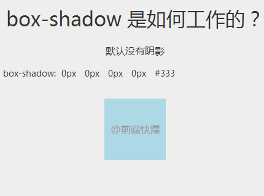

0. 常用css汇总
全局字体设置：font-family: 'Microsoft YaHei', 'Helvetica Neue', Helvetica, Arial, sans-serif;
去掉手机浏览器触摸高亮区 ：
*:focus{
outline: none;
tap-highlight-color:rgba(0,0,0,0);
-webkit-tap-highlight-color:rgba(0,0,0,0);
-webkit-user-modify:read-write-plaintext-only;
}
禁用手机系统默认菜单： -webkit-touch-callout:none
常用的响应式banner：
@media (min-width:1110px){
.banner{height:684px; background:url(img/banner1980.jpg) center center no-repeat; background-size:auto 100%;}
}
@media (min-width:769px) and (max-width:1110px){
.banner{height:383px; background:url(img/banner1110.jpg) center center;}
}
@media (min-width:569px) and (max-width:768px){
.banner{height:265px; background:url(img/banner768.jpg) center center;}
}
@media (min-width:415px) and (max-width:568px){
.banner{height:196px; background:url(img/banner568.jpg) center center;}
}
@media (min-width:321px) and (max-width:414px){
.banner{height:143px; background:url(img/banner414.jpg) center center;}
}
@media (max-width:320px){
.banner{height:111px; background:url(img/banner320.jpg) center center;}
}
1. css 雪碧（CSS Sprite） 雪碧图 与 background-position
2. css animation
@-webkit-keyframes water {
0% { left:0px}
50% { left:100px}
100% { left:0px }
}
@-moz-keyframes water {
0% { left:0px}
50% { left:100px}
100% { left:0px }
}
@keyframes water{
0% { left:0px}
50% { left:100px}
100% { left:0px }
}
p,.ani{
-webkit-animation: 4s water linear infinite;
-moz-animation: 4s water linear infinite;
animation: 4s water linear infinite;
}
animation:动画名称 持续时间 过渡类型 延迟的时间 循环次数
p
div click!
应用场景1
应用场景2
详细...
3. css transition
a.test{
background-color:#56eed9;
transition:background-color .5s ease-in;
}
a.test:hover{
background-color:#199482;
transition:background-color 2s ease-in;
}
css transition
css transition
4. css Transform 变换
旋转
div#box1{
transform:rotate(.5turn)
}
5. css before/afteraaabbbccc
6. css font icon fontello
7. css flex与box
flex 新 12年
box 旧 09年
ul{
display: box;
display: -webkit-box;
display: -moz-box;
display: -ms-box;
display: flex;
display: -webkit-flex;
display: -moz-flex;
display: -ms-flex;
box-align:start | center | end;
align-items:flex-start | center | flex-end;
box-align:center ;
-webkit-box-align:center;
-moz-box-align:center;
-ms-box-align:center;
align-items:center ;
-webkit-align-items:center;
box-orient:horizontal | vertical;
flex-direction:row | column;
box-orient:vertical;
-webkit-box-orient:vertical;
-moz-box-orient:vertical;
-ms-box-orient:vertical;
flex-direction:column;
-webkit-flex-direction:column;
}
ul li{
box-flex:1;-webkit-box-flex:1;-moz-box-flex:1;-ms-box-flex:1;
flex:1;-webkit-flex:1;-moz-flex:1;-ms-flex:1;
}
- menu1
- menu2
- menu3
- menu1
- menu2
- menu3
- 1
- 22
- 333
- 1
- 22
- 333
- 1
- 22
- 333
- 1
- 22
- 33
- 1
- 22
- 33
- 1
- 22
- 33
8 css 渐变色CSS3制作渐变色的按钮 → 点击跳转
9 css 文本超出显示省略号 Ellipsis overflow: hidden; white-space: nowrap; -webkit-text-overflow:ellipsis -khtml-text-overflow: ellipsis; -icab-text-overflow: ellipsis; -moz-text-overflow: ellipsis; -o-text-overflow: ellipsis; text-overflow: ellipsis; width:xx px;
10 css 投影 box-shadow box-shadow:0 0 0 0 #000; 内投影 box-shadow:inset 0 0 0 0 #000;  图片转自点击跳转